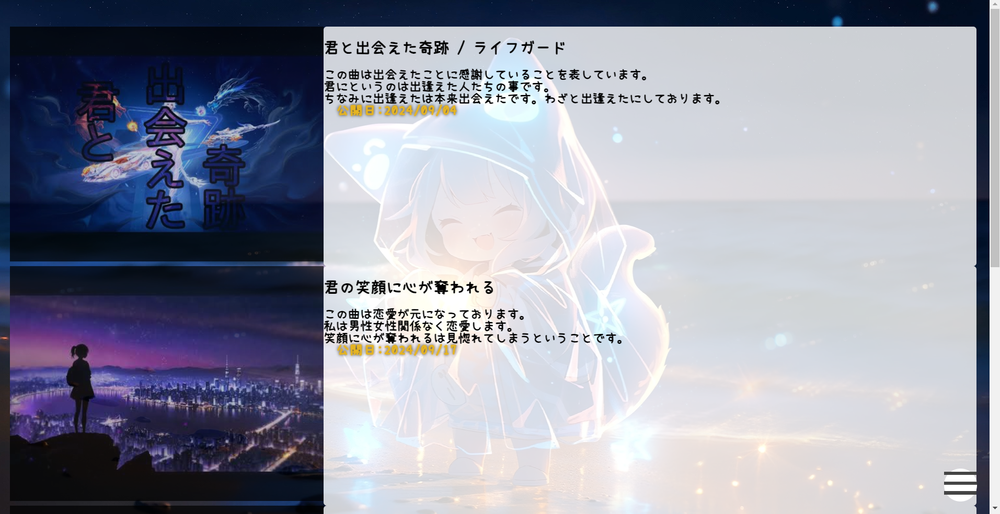
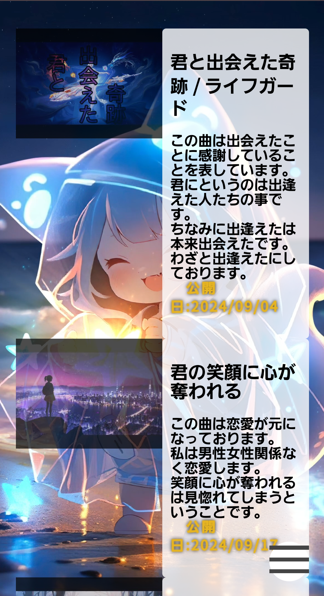
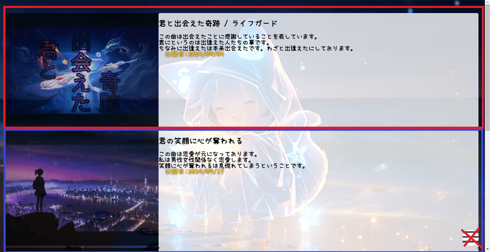
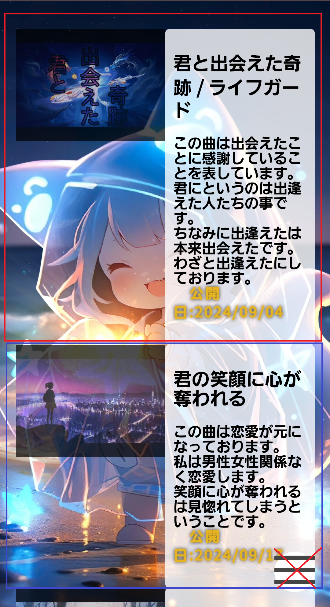
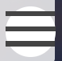

このサイトの説明
akaina0809
まずは初めにこのサイトはPCとスマホで紹介サイトが異なります。
以下は同じです画像でPCとmobileを表示しております。
homeを押すとPCはPCサイトにmobileはmobileサイトに
飛ばされます。ウイルスなどはないのでご安心を。
右下を押すとバーが表示され選択できます。
PC画面↓
mobile画面↓
そしていきたい動画は以下の範囲です
PC画面↓
mobile画面↓


「オプションメニュー」または「トグルメニュー」と呼ばれることがありますが、一般的には「ハンバーガーメニュー」これを押すことでメニューが開けます。
×